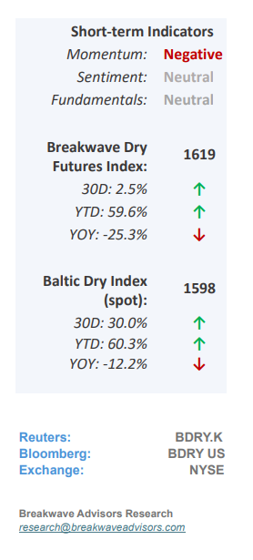
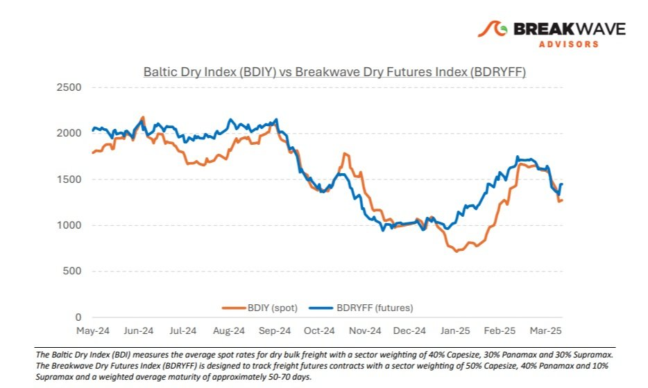
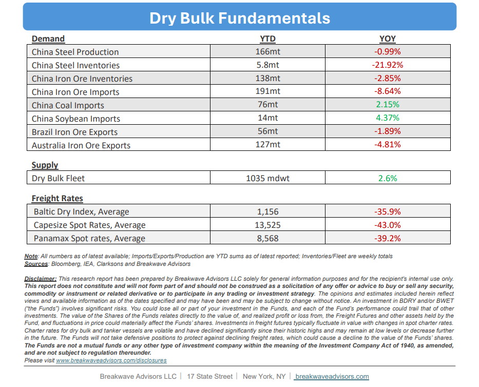

•Global Market Turmoil Sours Dry Bulk Sentiment –Following therecent tariffannouncements by the U.S. administration and the resulting volatility in global markets,sentimentin the dry bulk sector has alsobeen affected, leading to a softening in spot rates—most notably in the key Capesize segment. While dry bulk imports into the US accounts forless than 1%of the global market, the broader economic slowdown that may result from the new tariffs presents some downside risk for the sector. However, it is thesecondary effectsthat warrant closer attention. As investors around the world assess the implications of an evolving and uncertain trade landscape, it remains crucial to recognize that China continues to be the primary driver of demand in the dry bulk market. A prolonged trade conflict may promptadditional stimulus measuresfrom the Chinese government— particularly those aimed at supporting domestic infrastructure and industrial activity—which could, in turn, boost demand for dry bulk. This dynamic has not gone unnoticed by the freight futures market, where the recent pullback was short-lived and relatively muted. While global attention remains fixed on the ongoing tariff talks, the dry bulk sector has demonstratedresilienceand maintained a relatively solid footing. Looking ahead, further upside will likely depend on arecoveryin Chineserestockingactivity, especially given the year-to-date declines in import volumes.

•As Trade Frictions Grow, China’s Economy Might Refocus on Domestic Demand– Over the past two decades,Chinahas been akeyengineof global economic expansion and unquestionably the primarydriver of global tradegrowth. However, Chinese policymakers have long acknowledged the limitations of sustaining this growth model and have increasingly emphasized the need to pivot toward domestic consumption as a more sustainable foundation for long-term prosperity. The currenttrade tensionswith the United States present anopportunity for China to acceleratethis transition by recalibrating resource allocation. Future stimulus efforts are therefore expected to prioritize the revitalization of domestic consumption and the strengthening of social safety nets— critical measures toencourageChinesehouseholdsto reduce their precautionary savings andincrease spending. While we do not foresee a significant decline in industrial production during such transition, the outlook for any growth in steel production over the coming years will be challenging. As this economic transformation unfolds anddemand for raw materials begins to plateau, it becomes increasingly important to consider other key elements of the shipping market balance—namely voyage distances and vessel supply. On both fronts, we believe thedynamics remain supportiveover the medium term. Barring a sharp global economic downturn, dry bulk is well positioned to remain resilient and potentially benefit from these evolving market conditions.
•Our Long-term View– The last few years have been characterized by increased geopolitical uncertainty. Going forward, we expect such events to continue to affect global trade and have a meaningful impact on effective vessel supply. Combined with the potential for a multi-year cyclical rebound in China’s economic activity following the recent economic turmoil, dry bulk shipping should experience higher volatility on top of a secular tightness driven by stable bulk commodity demand and a slower fleet growth owing to a relatively low orderbook.


Subscribe: